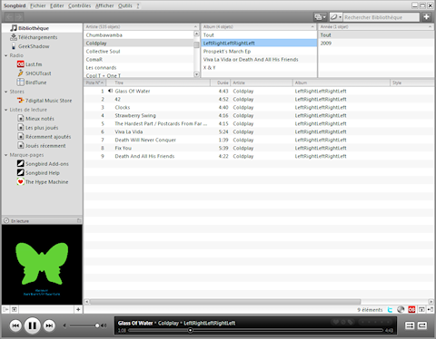

Songbird est disponible en version 1.2 !

Je vous invite à lire le
post dédié sur mon nouveau blog consacré à Songbird :
Frenchbirds
Pour information, j'ai lancé ce blog mi-mai, tout d'abord pour délester les news Songbird de mon blog, mais aussi pour regrouper une communauté francophone qui s'est forgée sur IRC comprenant développeurs, traducteurs et testeurs.
Ce blog va nous permettre de faire découvrir Songbird et aussi de promouvoir le logiciel autour de différents évènements comme les
Rencontres Mondiales du Logiciel Libre qui arrivent très bientôt.
Nos premiers projets sont la reprise de la
traduction française de Songbird, la traduction des news et le développement de différentes extensions. Si vous voulez participer au blog, écrire un tutoriel ou tout simplement apporter des suggestions contactez moi ;)

Commentaires 0
Aucun commentaire.